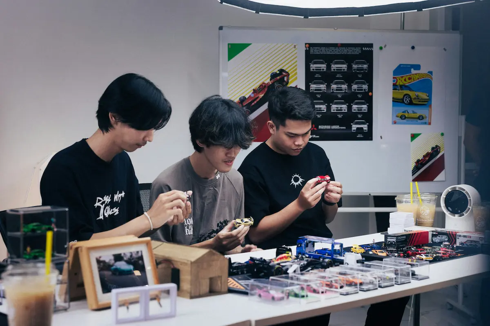

Democratization of India’s Hardware, Manufacturing & Bio Labs: Public Infrastructure for the Next Generation of Entrepreneurs
India is rapidly emerging as a global digital leader through its Digital Public Infrastructure (DPI). But software democratization alone is not enough. The next leap requires democratizing access to **hardware development, manufacturing capability, machine tools, fabrication labs, and biotechnology labs**.
When citizens gain affordable access to **CNC machines, machine tool labs, 3D printers, furnaces, moulding units, electronics workbenches, and bio labs**, innovation explodes — not only in startups but among students, tinkerers, hobbyists, and grassroots inventors.
1. Why India Must Democratize Hardware Innovation

India has millions of ideas but limited access to the tools needed to build real, physical products. Hardware innovation still requires large capital, expensive machines, and industrial infrastructure. With public labs — similar to DPIs — the barrier to entry collapses.
2. Machine Tool Labs as Public Infrastructure

Machine tool labs equipped with CNC machines, milling units, grinders, lathes, moulding equipment, and testing tools can allow any individual to invent or redesign hardware products.
Entrepreneurs could prototype:
- More efficient ACs, refrigerators, or washing machines
- Improved motors and compressors
- Energy-saving mechanical systems
- Redesigned home appliances
3. Democratizing Electronics & Embedded Hardware Development

Public electronics labs would give access to:
- Oscilloscopes, multimeters, logic analyzers
- Soldering and PCB fabrication tools
- Microcontroller programming benches
- Rapid prototyping kits for IoT and robotics
4. Bio Labs for the New Global Order

By 2030, biotechnology will reshape food, medicine, agriculture, and materials. India must give entrepreneurs access to:
- Microbiology labs
- Genome testing tools
- Enzyme & fermentation labs
- Drug formulation and stability testing
This will help India build products using ancient Indian ingredients in:
- Medicines
- Food and nutraceuticals
- Agriculture and bio-fertilizers
- Organic soaps, oils, and wellness goods
5. How Democratized Labs Will Transform India
Affordable access to manufacturing and biotechnology labs will:
- Enable grassroots invention
- Increase patent creation in hardware and bio categories
- Boost MSME product innovation
- Reduce dependency on imports
- Create thousands of small-scale hardware startups
Conclusion
If software DPI made India a digital superpower, **public hardware & bio infrastructure can make India a manufacturing and biotechnology superpower**.
Democratization is the foundation for a future where every Indian — not just large corporations — can invent, innovate, build, and patent world-changing products.